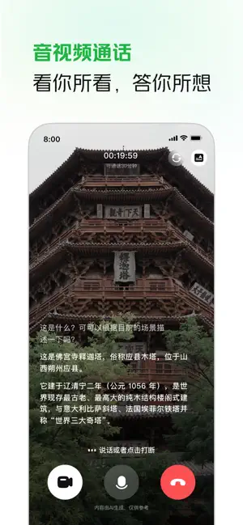
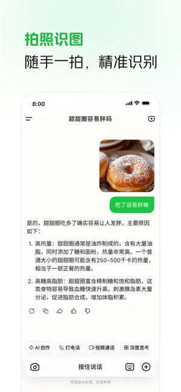

LongCat 深度对比：当 AI 助手遇上免费无广告的狠角色
横向对比市面上主流 AI 助手 App，LongCat 在免费策略、生图编辑和音视频通话上的差异化表现，以及它为这些优势付出的取舍代价。
我手机上装过至少五款主流 AI 助手 App，从大厂出的到创业团队做的，轮着试过来。这个类目里，大多数产品的套路都差不多：基础对话免费，深度思考按次扣 Token，生图打包成会员权益，音视频通话要么限时长要么干脆没做。LongCat 是少数几个跳出这套框架的——不是说它功能多领先，而是它在几个关键选择上，明显没跟着行业惯性走。去LongCat官网扫一眼首页就能感受到。
同类工具里它站哪儿
先把坐标系拉清楚。国内手机端 AI 助手这个赛道，目前大致分三档：大厂全家桶（直接集成在系统或已有 App 里，比如某厂的语音助手、某生活服务 App 里的 AI 入口）、独立品牌会员制（按月或按年订阅，功能分等级解锁）、以及 LongCat 所在的这条——完全免费、无会员、无广告弹窗。
这条路线其实不好走。免费意味着你很难靠差异化的收费层来支撑研发成本，要么靠背后大厂输血，要么靠 API 侧商业变现。LongCat 走的是前者——背后有大公司托着，App 侧六大能力全开放，生图可存可分享无水印门槛，通话时长不跟付费挂钩。这个定位让它在同价位（零元）里几乎没有真正的竞争对手，因为其他免费产品要么砍了生图、要么生图带水印、要么对话轮数有限制。要体验这套免费模式，直接从官方下载就行。
它真正做对的几件事
光免费还不够，免费产品死在体验上的比比皆是。LongCat 能让我在装了半个月后还留着，靠的是几个别家没做或者没做好的细节。
用嘴改图，而且改不崩
AI 生图现在各家都有，但编辑环节的差距非常大。大多数工具的做法是：给你几个固定模板按钮（比如"换背景""加滤镜"），或者让你上传蒙版图自己圈选区域。LongCat 干脆跳过所有中间层——直接对图说话。
"头发颜色变成灰色，衣服颜色变成米色，面带微笑。"
就这一句话，它给你出一张新图。然后你可以接着说"拉远镜头，显示更多室内场景"，再出一张。多轮下去，画面风格和光影不会跑偏，人像的面部特征也能稳住。官方说的"用嘴改图"不是营销口号，是真的没有图层、没有蒙版、没有画笔——门槛降到了零。
对比下来，同类产品要么只能改文字提示重抽（等于从零再来），要么编辑能力藏在付费墙后面。LongCat 把"生图+改图"做成了一条完整的工作流，而且全免费。改图有 15 类细分任务，完整清单可以去LongCat文档翻。

一次出多张的边际成本思维
1.6.0 版本加了单次生成多张图片的能力。表面看这就是个"一次出四张"的功能，实际用下来发现背后是个很聪明的产品设计——它帮用户省下的不是时间，而是"决策痛苦"。
以前的流程是：出一张 → 不满意 → 重来 → 又不满意 → 再重来。每一轮你都在跟模型猜心。一次多张把这个循环变成：出一批 → 挑一张 → 深改一张。多张方案的边际成本远低于多轮重抽，用户也不用在每次失败后从头组织语言。
这个设计在"没想好风格""海报要提案""挑人物形象"这些场景里特别好用。我做海报提案时，同一描述让它出写实、插画、3D 各一张，三秒钟就能给客户三个方向，而不是等十分钟出一张再改。
音视频通话真的能用
很多 AI 助手做通话功能是"有但不好用"——语音识别准确率低、视频画面卡顿、方言听不懂。LongCat 的通话能力是首发就跟上了，而且方言识别覆盖得不错，普通话不标准也能用。视频通话现在已经是首页直接发起，不用绕路。
我对比过几款同类：有的视频通话限 5 分钟，有的语音对答超过三轮就开始答非所问，有的干脆只有语音没有视频。LongCat 在这里的表现更像一个成熟的通话产品，而不是"AI 套壳"。

为这些优势它付出了什么
没有产品是完美的。LongCat 的免费和体验优势，是用几个层面的取舍换回来的。
最明显的一点：它看不到自己的界面。这是个已知局限——有用户实测问"怎么关闭首页推荐话题"，它给的答案却是手机系统设置里的操作步骤。它知道怎么操作 AI，但不知道你手上这个 LongCat App 本身怎么设置。这种"对自己失明"的问题，在系统级助手里反而不存在，因为那些助手直接跑在系统里。
第二点：对话记录没有导出功能。需要留档的内容只能复制或截图，删除的会话不可恢复。对大多数用户来说这不是什么大问题，但如果你是重度依赖会话做资料归档的人，这会是个硬伤。
第三点：它是问答和创作助手，不做交易操作。不能帮你点外卖、不能帮你抢票，这些事还得自己去对应平台。这个定位很清晰，但也意味着如果你期待的是一个万能生活助理，LongCat 可能满足不了。
第四点：未来收费的可能性始终存在。App 侧现在免费是因为模型打磨和积累反馈阶段，但商业决策随时可能变。警惕任何声称"付费解锁高级版"的骗局——官方渠道免费的功能，第三方卖什么"代充"都是骗钱的。
怎么选
说了这么多，到底该不该装？给个明确判断。
如果你的需求是日常问答、生图创作、偶尔打个语音视频电话，而且不想被会员和广告烦——LongCat 是目前最好的免费选择，没有之一。 它在这个价位里没有真正的竞争对手，六大能力全开、生图能改、通话能用，这些加在一起是碾压级的。
如果你需要一个能操作手机、能帮你下单抢票的万能助理，或者你重度依赖会话导出做工作流——LongCat 可能不适合你。 系统级语音助手在系统操作上有天然优势，专门的任务自动化工具在工作流上更专业。
另外还有个小提醒：回答太慢或失败的时候，先看看是不是同时开了深度思考和联网——这套组合是所有开关里最耗资源的，等待时间最长。网络没问题还不行就新开会话重试。
LongCat 不是这个类目里功能最全的，也不是模型能力最强的，但它在"免费且好用"这件事上做到了极致。如果你还没装过，值得下载体验一下——在一个被会员和广告绑架的品类里，它确实是一股清流。关于它的使用资料，GitHub、Gitee、GitCode 三个仓库都有同步，国内访问哪个方便就用哪个。